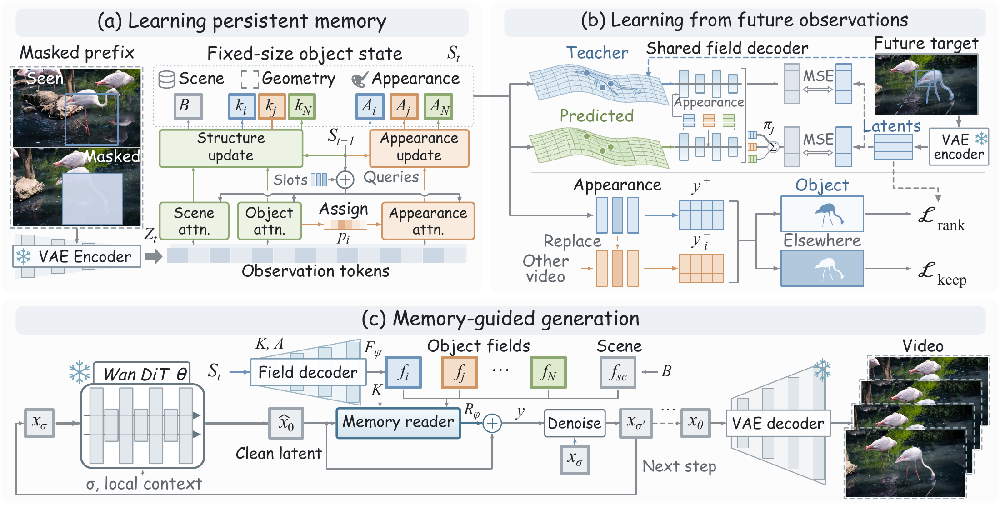
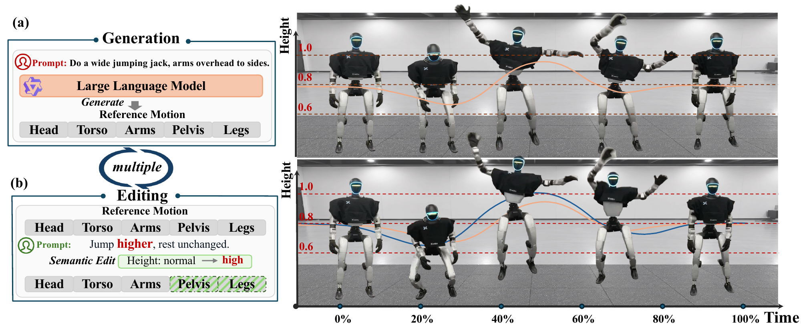

Yongxue Xu(Jerry)
jiangjiangcheng753@gmail.com 2715743744@qq.com xuyx85@mail2.sysu.edu.cn
I am an undergraduate student at Sun Yat-sen University, majoring in Intelligent Science and Technology in the School of Intelligent Systems Engineering. My research interests lie in video generation, world models, 4D scene understanding, and world-action models (WAM).
My research journey began with graph networks, sparked by a data structures course in which I was drawn to the elegance of representing a problem through structure. Graph-based decision problems taught me to look beyond isolated predictions and ask how relations, constraints, and organization shape a system's behavior.
Over time, that interest grew into a broader question: if structure can organize reasoning on graphs, can a model also discover and use structure in the visual world? This question drew me from static graph problems toward video and 4D scenes, and eventually toward generative modeling. The challenge was no longer only to make predictions on a given structure, but to understand how a world is organized and how it changes.
I am especially drawn to generative models as more than visual synthesizers. Generation can itself be a way of understanding: asking a model to imagine what comes next, respond to an action, or reconstruct what is missing often reveals what it has actually learned about the world. I am interested in this idea of generation-driven understanding, and perhaps more broadly, generation-driven anything - where generation becomes a tool for reasoning, interaction, and discovery rather than merely an endpoint. This perspective continues to guide the problems I choose and the collaborations I seek.
Currently, I collaborate with HKUST, SJTU, and Westlake University on video generation, world-action modeling, and multimodal spatiotemporal understanding. I am also part of , a small group exploring multimodal understanding and generation. Through vibe coding, we develop RSI and auto-research workflows that help AI frame questions, build systems, evaluate results, and iterate. We see AI builds AI as a promising next step and welcome collaborators who value unusual ideas, honest discussion, and learning by building. If this resonates, feel free to email Jerry or Chaoyue.
News

- We release LaST, using fixed-size object memory to preserve geometry and appearance when objects reappear after occlusion or leaving the view in long-video generation.
- We release TRACE, using typed references for conversational humanoid motion editing that changes targeted components while preserving the rest of the motion.
- We release EviGDA, extending graph domain adaptation beyond representation learning by combining complementary experts with entropy-aware evidence fusion.
- We release POSReasoner, reasoning over persistent object states to preserve identities through occlusion, reappearance, and similar-instance interactions.
- We release DRCIM-ML, a diffusion-aware, role-guided evolutionary framework for robust competitive influence maximization across heterogeneous multilayer networks.
- We release LMM-Track4D, using trajectory-grounded dialogue and streaming state tokens for stable 3D reasoning under occlusion and viewpoint changes.
- We release our study of critical-node identification, benchmarking deep and reinforcement learning on real urban road networks and earning the GBCESC 2025 Best Paper Award.
Selected Publications
-
LaST

LaST: Latent State Tracking for Persistent Object Memory in Video World ModelsSubmitted to ICLR 2027 -
TRACE

TRACE: Typed Reference-Aware Conversational Editing for Humanoid Motion DiffusionSubmitted to ICLR 2027 -
TNSE
 Solving the Robust Influence Maximization Problem in Competitive Multilayer Networks via a Diffusion-Aware Role-Guided Evolutionary ApproachIEEE Transactions on Network Science and EngineeringUnder review
Solving the Robust Influence Maximization Problem in Competitive Multilayer Networks via a Diffusion-Aware Role-Guided Evolutionary ApproachIEEE Transactions on Network Science and EngineeringUnder review -
GBCESC
 Identifying Critical Nodes with Deep Learning and Reinforcement Learning: A Case Study on Urban Road NetworksGBCESC 2025Best Paper Award
Identifying Critical Nodes with Deep Learning and Reinforcement Learning: A Case Study on Urban Road NetworksGBCESC 2025Best Paper Award